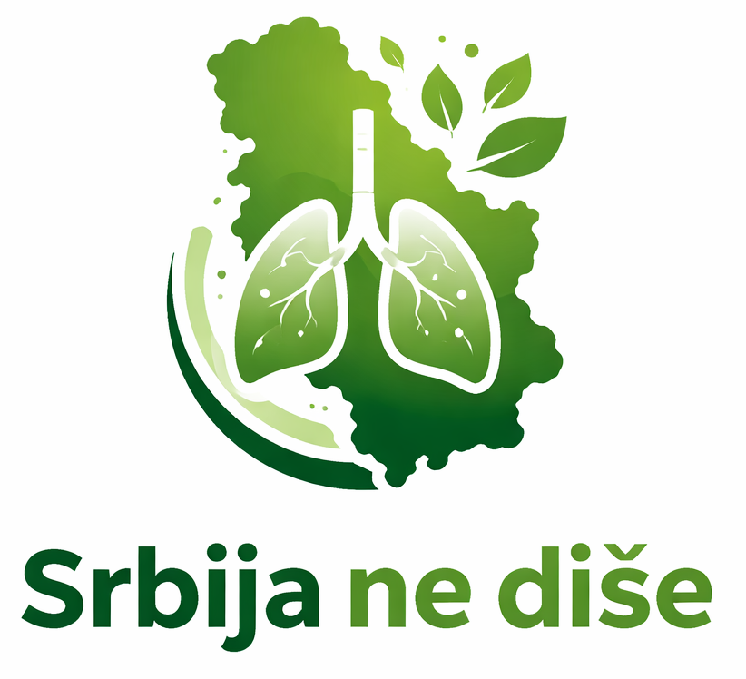
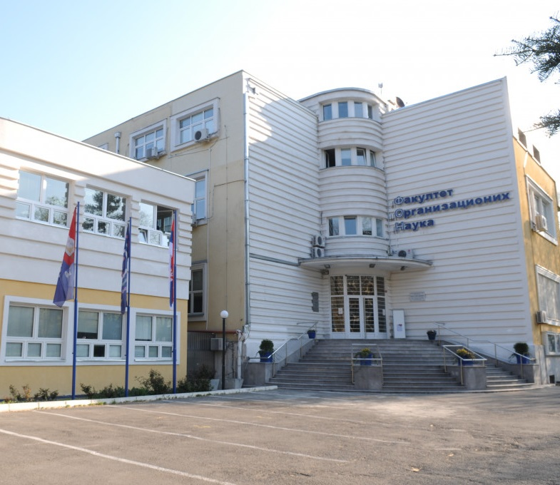
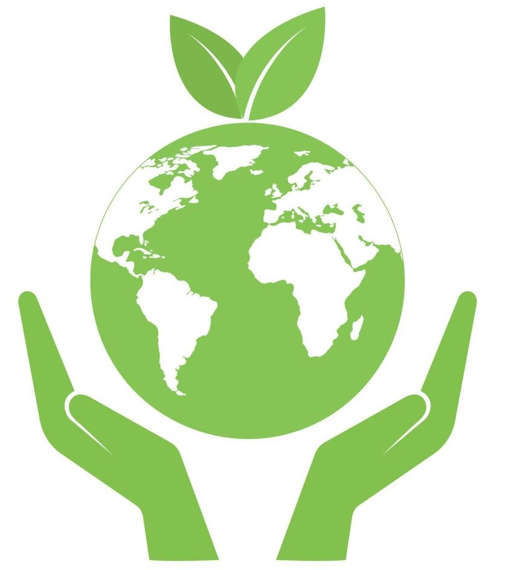

Ekološka organizacija
Analiza zagađenosti vazduha primenom mašinskog učenja
Dizanje svesti građana republike Srbije o uticaju otrovnih čestica na zdravlje

Dizanje svesti građana republike Srbije o uticaju otrovnih čestica na zdravlje
Primarni korisnik projekta je bilo koji građanin zainteresovan za praćenje kvaliteta vazduha. Posebno se ističu stariji stanovnici i stanovnici sa kardio-vaskularnim ili pulmonarnim oboljenjima.

Dostupnost dobijenih nalaza za korišćenje u daljim istraživanjima profesora i studenata srpskih univerziteta

Svim organizacijama koje se bave “zelenim” delovanjem obezbeđujemo dokaze, kojima mogu širiti svest i uticati na upravne organe na lokalnom i državnom nivou
Kombinacijom različitih izvora informacija i prediktivne analize, pomažemo samoupravnim organima u boljem planiranju i donošenju odluka vezanih za zaštitu sredine